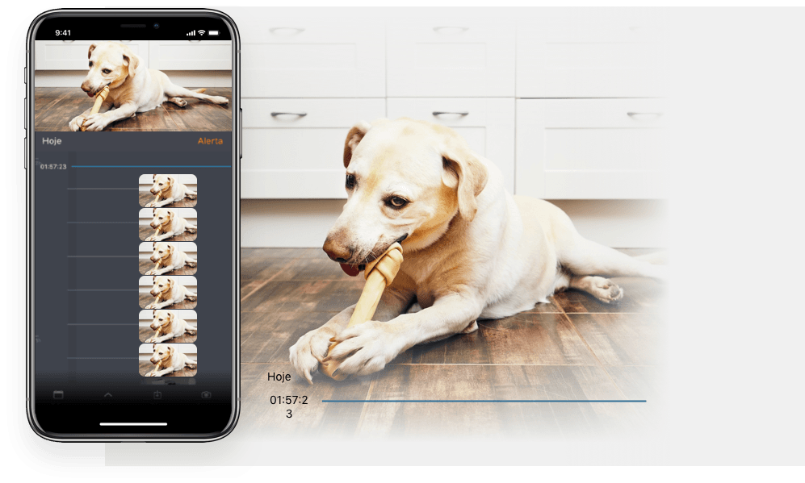

Será que ele comeu a ração direitinho? Será que foi para fora e tomou chuva? O que ele anda aprontando, hein?! Camia responde todas essas perguntas e você ainda fica em paz, sabendo se seu pet está bem.
Camia é a câmera por assunatura inteligente, fácil de instalar e que grava tudo em nuvem
Você não precisa ficar ansioso toda vez que sai de casa. Com Camia, você acompanha cada passo dos seus filhinhos de 4 patas.
Com a inteligência da Camia, você é avisado sempre que um movimento for detectado.
Com áudio bidirecional você interage com quem estiver no ambiente, seja para conversar com familiares ou assustar intrusos.